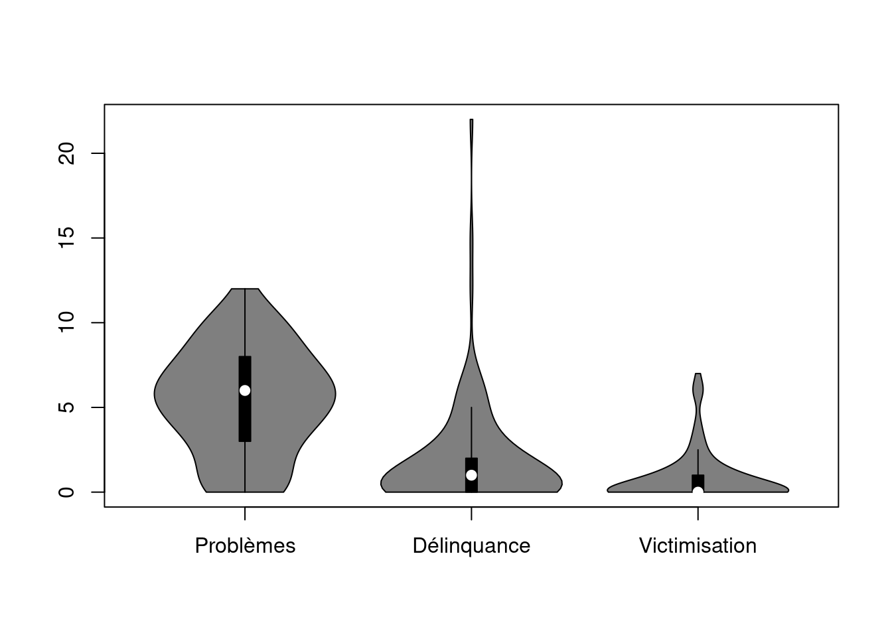
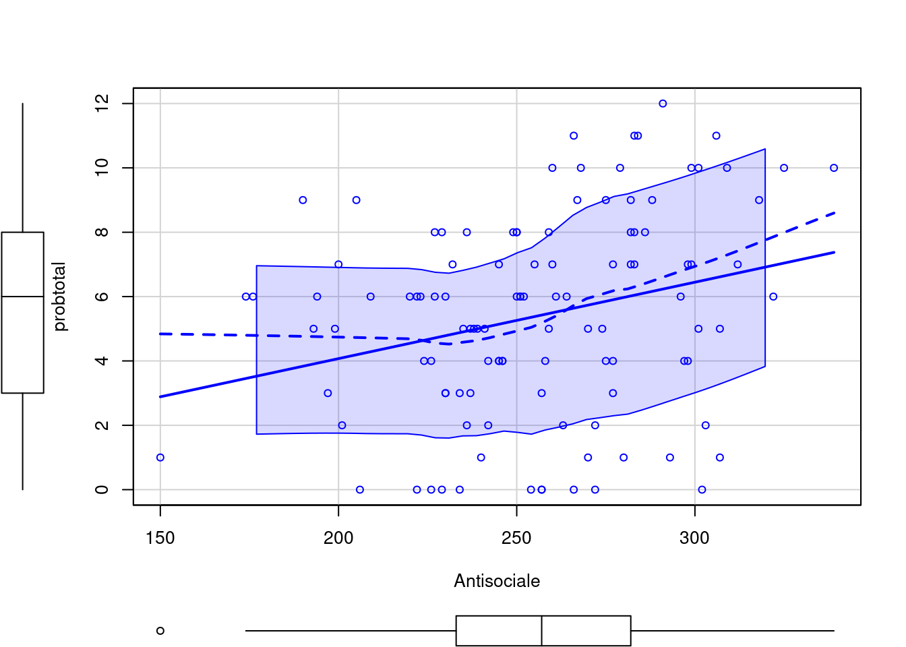
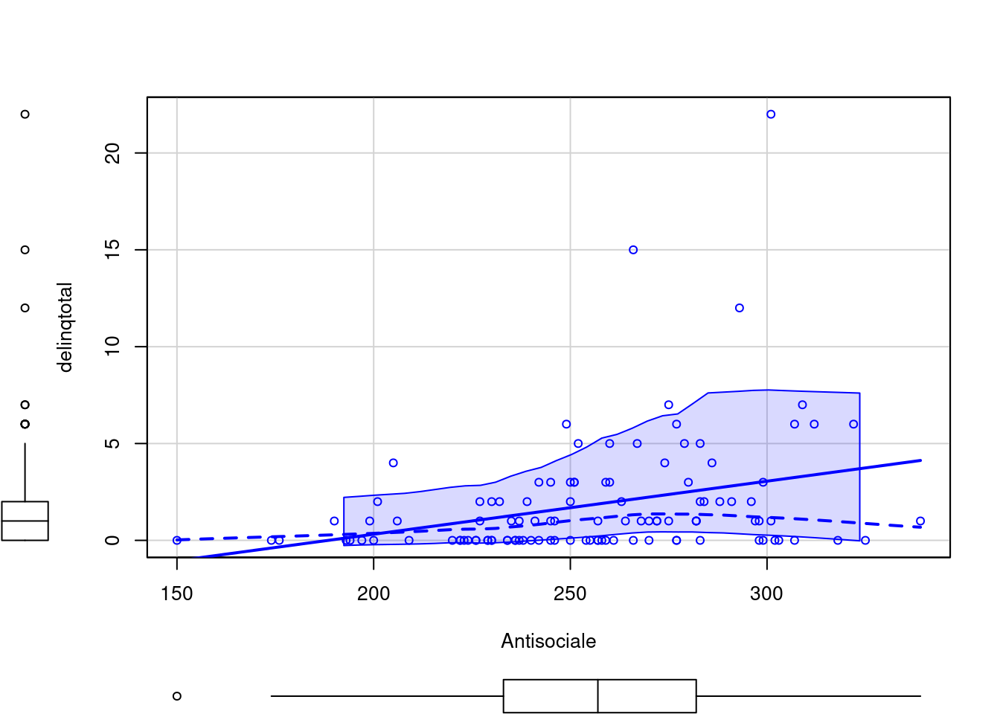

| Variable | Score brut moyen | Ecart-type | Min. | Max. | Norme m | Norme ET | Delta | p < .001 |
|---|---|---|---|---|---|---|---|---|
| NEVROSISME | 96.56 | 22.07 | 51 | 144 | 92.25 | 23.19 | 0.19 | N |
| N1 : Anxiété | 16.90 | 5.43 | 4 | 29 | 17.80 | 5.44 | -0.17 | N |
| N2 : Colère-Hostilité | 15.46 | 4.79 | 2 | 28 | 14.35 | 5.22 | 0.22 | N |
| N3 : Dépression | 16.46 | 5.71 | 6 | 29 | 15.36 | 5.59 | 0.20 | N |
| N4 : Timidité sociale | 16.60 | 4.52 | 6 | 28 | 15.95 | 4.73 | 0.14 | N |
| N5 : Impulsivité | 17.70 | 3.99 | 8 | 29 | 16.89 | 4.50 | 0.19 | N |
| N6 : Vulnérabilité | 13.45 | 5.04 | 2 | 25 | 11.90 | 4.92 | 0.21 | N |
| EXTRAVERSION | 115.12 | 18.08 | 67 | 156 | 110.02 | 18.33 | 0.28 | N |
| E1 : Chaleur | 22.71 | 4.21 | 13 | 32 | 22.43 | 4.41 | 0.06 | N |
| E2 : Grégarité | 18.95 | 5.59 | 3 | 30 | 17.38 | 5.42 | 0.28 | N |
| E3 : Assertivité | 14.46 | 4.40 | 3 | 23 | 14.45 | 4.63 | 0.00 | N |
| E4 : Activité | 17.76 | 4.19 | 9 | 28 | 19.04 | 4.43 | -0.30 | N |
| E5 : Recherche de sensation | 20.13 | 4.57 | 6 | 29 | 16.60 | 4.74 | 0.76 | O |
| E6 : Émotions positives | 21.12 | 4.48 | 10 | 31 | 20.11 | 4.81 | 0.22 | N |
| OUVERTURE | 108.38 | 17.61 | 73 | 152 | 116.53 | 19.07 | -0.43 | O |
| O1 : Rêveries | 19.49 | 5.10 | 7 | 31 | 18.82 | 5.16 | 0.13 | N |
| O2 : Esthétique | 17.71 | 6.80 | 7 | 63 | 18.76 | 5.69 | -0.17 | N |
| O3 : Sentiments | 20.01 | 3.64 | 7 | 28 | 21.06 | 3.97 | -0.28 | N |
| O4 : Actions | 15.55 | 3.90 | 5 | 23 | 17.36 | 3.86 | -0.47 | O |
| O5 : Idées | 16.95 | 5.39 | 4 | 30 | 19.46 | 5.22 | -0.47 | O |
| O6 : Valeurs | 19.01 | 2.95 | 11 | 28 | 21.07 | 3.75 | -0.62 | O |
| AGREABILITE | 113.80 | 20.07 | 73 | 167 | 121.19 | 16.77 | -0.40 | O |
| A1 : confiance | 16.62 | 4.31 | 7 | 28 | 17.61 | 5.36 | -0.21 | N |
| A2 : Droiture | 18.88 | 5.76 | 7 | 32 | 20.28 | 5.06 | -0.26 | N |
| A3 : Altruisme | 22.80 | 4.30 | 11 | 32 | 23.05 | 3.64 | -0.06 | N |
| A4 : Compliance | 16.01 | 6.08 | 3 | 52 | 17.70 | 4.64 | -0.32 | N |
| A5 : Modestie | 18.86 | 5.20 | 0 | 30 | 20.72 | 4.27 | -0.39 | O |
| A6 : Sensibilité | 20.63 | 3.59 | 10 | 29 | 21.84 | 3.70 | -0.33 | O |
| CONSCIENCE | 101.64 | 19.29 | 57 | 159 | 115.89 | 20.34 | -0.72 | O |
| C1 : Compétence | 17.51 | 4.02 | 9 | 32 | 19.29 | 3.84 | -0.45 | O |
| C2 : Ordre | 16.14 | 4.65 | 4 | 30 | 18.30 | 5.00 | -0.45 | O |
| C3 : Sens du devoir | 19.21 | 4.09 | 8 | 31 | 22.90 | 4.05 | -0.91 | O |
| C4 : Recherche de réussite | 18.20 | 4.19 | 7 | 29 | 19.10 | 4.42 | -0.21 | N |
| C5 : Autodiscipline | 16.82 | 5.18 | 7 | 35 | 19.38 | 4.99 | -0.50 | O |
| C6 : Délibération | 13.76 | 4.26 | 3 | 25 | 16.92 | 4.79 | -0.52 | O |
| NPM | 12.69 | 3.84 | 3 | 26 | 8.93 | 4.18 | 0.94 | O |
| PPM | 17.63 | 3.57 | 9 | 26 | 20.72 | 4.01 | -0.82 | O |
| INC | 8.70 | 3.42 | 0 | 21 | 6.35 | 2.89 | 0.74 | O |
| Antisocialité | 255.96 | 35.78 | 150 | 339 | 236.60 | 31.32 | 0.58 | O |
| Psychopathie | 295.63 | 37.19 | 214 | 384 | 279.70 | 31.33 | 0.46 | O |
Introduction
L’intérêt pour le lien entre la personnalité d’un individu et sa propension à commettre des actes transgressifs est ancien et a donné naissance à une discipline nouvelle au 19ème siècle : la criminologie. En effet, c’est avec Lombroso (1876), Garofalo (1888) et Ferri (1893) qu’une première théorie supposait l’existence d’une personnalité criminelle à l’origine des passages à l’acte délictueux. Ces thèses furent vivement critiquées par la suite notamment par des criminologues se référant au paradigme sociologique. Pour ceux-ci, la tendance à la délinquance est majoritairement déterminée par des variables sociales et situationnelles indépendantes de la personnalité du délinquant. En psychiatrie et en psychologie clinique, la personnalité dite criminelle a toutefois survécu en changeant plusieurs fois de formes et de noms. Aujourd’hui, le DSM-5 (APA, 2013) évoque la personnalité antisociale parmi les troubles de la personnalité. En parallèle, la psychopathie est un domaine de recherche très fécond et vivant. C’est bien souvent au travers d’entretiens cliniques (structurés ou non) et d’études du parcours de vie (notamment pénal) que ces diagnostics sont posés selon une logique catégorielle : ce patient correspond-il aux critères de l’antisocialité / de la psychopathie ou pas ? Cette approche catégorielle des troubles de la personnalité a toutefois fait l’objet de critiques (Westen & Arkowitz-Westen, 1998; Widiger & Samuel, 2005) qui ont mené à une conception dimensionnelle de ces troubles (Costa & Widiger, 2002). Lynam & Widiger (2001) établirent ainsi des profils prototypiques pour chaque trouble de la personnalité sur base de l’avis de spécialistes de ces troubles. Les scores obtenus par un individu à un questionnaire de personnalité auto-rapporté tel que le NEO PI-R (Costa, McCrae, & Rolland, 1998) permettent dès lors d’évaluer leur ressemblance avec le profil typique de tel ou tel trouble de la personnalité selon sa description dans le DSM-IV (APA, 1994). La méta-analyse de Samuel & Widiger (2008) et la revue de la littérature de Miller (2012) permettent de soutenir l’hypothèse d’un lien robuste entre les variables du modèle en cinq facteurs et les troubles de la personnalité. Cette approche permet d’aborder les troubles de la personnalité selon une logique dimensionnelle, donc continue, et plus nuancée que l’approche catégorielle. Miller (2012) encourage l’exploitation de ce modèle dans les futures taxonomies psychiatriques. Concernant la personnalité antisociale, Gudonis, Miller, Miller, & Lynam (2008) ont comparé les scores d’antisocialité générés sur base du prototype du modèle en cinq facteurs et les résultats d’un entretien diagnostic semi-structuré en relation avec des variables telles que l’agression, la délinquance, l’usage de drogues, la psychopathie, le comportement sexuel à risque, le niveau d’étude, la carrière professionnelle et le quotient intellectuel. Ils trouvèrent que les deux types de scores présentaient des corrélations très similaires (ICC = .85). Jones, Miller, & Lynam (2011) se sont intéressés aux facettes qui sous-tendent les cinq grands domaines du NEO PI-R et constatent que celles qui présentent les tailles d’effet les plus élevés avec le comportement antisocial sont la droiture (A2), la compliance (A4), la délibération (C6), le sens du devoir (C3) et l’altruisme (A3). Selon Miller (2012), le score d’antisocialité calculé sur base du NEO PI-R présente une validité convergence dont la taille d’effet pondérée est égale à .40 (sur base de 13 études, N = 3087). Ces scores méritent toutefois d’autres travaux de validation.
La présente étude poursuit plusieurs objectifs. Le premier est d’évaluer le lien entre les scores d’antisocialité et de psychopathie extraits du NEO PI-R et des variables criminologiques extraites d’un questionnaire de délinquance auto-révélée (qui évalue également des variables de victimisation). Le deuxième est de s’intéresser au lien entre les domaines mais aussi les facettes du NEO PI-R et ces variables criminologiques. Le troisième est de réfléchir aux liens complexes susceptibles d’exister entre des variables de personnalité et des comportements délinquants.
Méthode
Participants
Nous avons envoyé un courrier expliquant le but de la recherche à quatorze établissements scolaires de la région de Tournai (en Belgique). Cette région a été choisie car elle nous permettait d’accéder aisément aux établissements grâce à la proximité géographique de la réalisation de l’étude. Parmi les quatorze établissements, deux ont répondu favorablement : l’un de type général et l’autre de type général et technique. Tous deux ont signé un formulaire de consentement à l’étude.
Notre échantillon initialement composé de 133 sujets est constitué d’étudiants âgés de quinze à seize ans effectuant leurs études dans une école secondaire belge. Cette tranche d’âges est considérée d’un point de vue criminologique comme étant l’âge d’entrée le plus fréquent dans les parcours délictueux (Born & Glowacz, 2017). En Belgique, dès seize ans, certains étudiants sont susceptibles de suivre une formation pratique et fréquentent dès lors plus rarement l’établissement scolaire. Nous pensons que nos étudiants sont représentatifs des établissements scolaires qu’ils fréquentent.
Lors du dépouillement des protocoles et de leur analyse, il est ressorti que 21 des protocoles sur les 133 distribués à notre échantillon étaient invalides et ceci pour diverses raisons telles que : non remplis par choix, remplis de façon volontairement biaisée, non achevés soit par manque de temps, soit par lassitude, etc. L’échantillon final constituant cette étude est composé de 112 participants ayant complètement rempli le protocole qui leur a été remis. Parmi ces 112, la variable de problème de délinquance présentait une valeur potentiellement problématique car un des participant a rapporté beaucoup plus de problèmes de délinquance que les autres (66). Par prudence, nous avons exclu cette valeur des traitement statistiques.
Procédure
Deux échelles d’évaluations ont été soumises à notre population d’adolescents dans le local de cours. Suite aux exigences des établissements, la passation des protocoles a été effectuée en 1h30. Avant de démarrer la passation du protocole anonymisé par l’attribution d’un numéro, une brève présentation de l’étude fut exposée aux participants. Le protocole de passation établi se composait d’une échelle d’évaluation de la personnalité élaborée sur base du modèle en cinq facteurs qu’est le NEO PI-R (Costa et al., 1998) ainsi que d’une échelle d’évaluation auto-révélée de la délinquance élaborée pour ce travail et inspirée de Born & Glowacz (2007) qui ont participé au projet de l’International Study on Self-Related Delinquency (ISRD) en collaboration avec Junger-Tas & Marshall (2012). Des dictionnaires furent mis à la disposition des participants pour les aider à répondre aux questionnaires.
Questionnaire de délinquance auto-révélée
Le questionnaire auto-révélée de la délinquance se composait notamment de trois questions principales :
- Avez-vous déjà eu l’un des problèmes suivants ?
- Brouille ou dispute
- Bagarre
- Accident ou blessure
- Perte d’argent ou d’autres objets de valeur
- Objets ou vêtements abîmés
- Problèmes avec vos parents
- Problèmes avec vos amis
- Problèmes avec vos professeurs
- Mauvais résultats à l’école ou au travail
- Victime d’un vol
- Problèmes avec la police
- Hospitalisé ou admis aux urgences
- Rapport sexuel que vous regrettez le lendemain Rapport sexuel non protégé
- Au cours des 12 derniers mois, selon quelle fréquence avez-vous…
- Frappé un de vos professeurs
- Été impliqué(e) à une bagarre à l’école ou au travail
- Pris part à une bagarre où un groupe de vos amis était confronté à un autre groupe
- Blessé quelqu’un suffisamment pour qu’il ait besoin de bandages ou d’un docteur
- Utilisé une arme de quelque sorte pour obtenir quelque chose de quelqu’un
- Pris quelque chose dans une boutique sans le payer
- Mis exprès le feu aux affaires de quelqu’un d’autre
- Abîmé exprès du matériel de l’école
- Eu des problèmes avec la police à cause de quelque chose que vous aviez fait
- Fait partie d’un groupe persécutant un individu
- Fait partie d’un groupe blessant physiquement un individu
- Fait partie d’un groupe commençant une bagarre avec un autre groupe
- Provoqué une bagarre avec un autre individu
- Volé quelque chose d’une valeur de 15€ ou plus
- Entré par effraction quelque part pour voler
- Abîmé exprès des biens publics ou privés
- Vendu des objets volés
- Au cours des 12 derniers mois, selon quelle fréquence avez-vous…
- Été personnellement persécuté(e) par tout un groupe
- Été blessé(e) physiquement par tout un groupe
- Fait partie d’un groupe qui a été attaqué par un autre groupe
- Été impliqué(e) dans une bagarre par quelqu’un
- Été victime de vol pour une valeur de 15€ ou plus
- Quelqu’un est entré par effraction chez vous pour voler quelque chose
- Quelque chose vous appartenant a été abîmé exprès
- Acheté des objets volés
Au terme de la passation, un feed-back fut proposé aux élèves qui le souhaitaient. Nous leur laissions pour ce faire nos coordonnées électroniques et téléphoniques tout en leur précisant de garder précieusement leur numéro de protocole, celui-ci permettant de faire le lien avec les résultats pour un éventuel feed-back.
Traitement statistique
Les domaines et les facettes du NEO PI-R ont été calculés conformément au manuel français du test (Costa et al., 1998). La variable de la personnalité antisociale a été calculée selon cette formule1 :
\[ antisocialité = N1r + N2 + N4r + N5 + E3 + E4 + E5 + O4 + A1r + A2r + A3r + A4r\\ + A5r + A6r + C3r + C5r + C6r \]
La variable de psychopathie a été calculée selon cette formule2 :
\[ psychopathie = N1r + N3r + N4r + N5 + N6r + E1r + E3 + E5 + O3r + O4 + A1r + A2r\\ + A3r + A4r + A5r + A6r + C1 + C3r + C5r + C6r \] Selon Decuyper, De Clercq, De Bolle, & De Fruyt (2009), ces deux variables sont utilisables auprès d’une population d’adolescents et présentent une validité convergente forte avec la personnalité antisociale. Les variables de validité ont été calculées selon la méthode de Schinka, Kinder, & Kremer (1997) et Schinka (2011). Elles sont au nombre de trois : (a) NPM renvoie à la tendance à présenter une image négative de soi, (b) PPM renvoie à la tendance à présenter une image positive de soi et (c) INC renvoie à la tendance à répondre de manière incohérente.
Nous disposons de trois variables criminologiques :
- La variable problèmes est la somme des 14 items du questionnaires cotés 0 (“jamais”) ou 1 (oui). La somme varie dès lors théoriquement de 0 à 14.
- La variable faits de délinquance est la somme des 17 items du questionnaire coté de 0 (“jamais”), 1, 2, 3 ou 4 (“cinq fois ou plus”). La somme varie dès lors théoriquement de 0 à 68
- La variable faits de victimisation est la somme des 8 items du questionnaire coté 0 (“jamais), 1, 2, 3 ou 4 (“cinq fois ou plus”). La somme varie dès lors théoriquement de 0 à 32.
Les corrélations que nous avons effectuées sont des corrélations non paramétriques (Rho de Spearman). Pour effectuer les équations de régression, nous avons centré les variables et omis un participant dont le score de faits de délinquance était extrême (66).
Résultats
Fiabilité des variables
Concernant les cinq grands domaines (comptant chacun six facettes) du NEO PI-R, l’alpha de Cronbach est égal à .84 pour N, .74 pour E, .71 pour O, .76 pour A et à .82 pour C.
L’alpha de Cronbach des trois échelles criminologiques est égal à .79 pour problèmes, .94 pour faits de délinquance et à .36 pour faits de victimisation. Pour évaluer l’unidimensionalité de ces trois variables, nous avons procédé à trois analyses factorielles. Concernant problèmes, le premier facteur explique 28% de la variance. Seul l’item rapport sexuel non protégé ne sature pas ce facteur. Concernant faits de délinquance, un facteur explique 62% de la variance totale. Concernant faits de victimisation, deux facteurs semblent pouvoir être distingués : (a) un premier qui se rapporte au fait d’avoir été victime d’actes violents (5 items, 25% de la variance) et (b) un deuxième qui se rapporte au fait d’avoir été victime de vols (2 items, 16% de la variance).
Statistiques descriptives
Le Table 1 présente la moyenne, l’écart type, le score minimal, le score maximal, la moyenne normative (Costa et al., 1998), l’écart type normatif et le Delta de Cohen (1992) auquel nous avons associé un test t (le seuil de significativité du test t est de .001 qui est le seuil .05 corrigé par la formule de Bonferroni pour 40 tests) pour chacune de nos variables. La lettre O indique que la différence est significative et la lettre N indique qu’elle ne l’est pas.
Pour les 35 variables du NEO PI-R, les normes sont celles du manuel français officiel (Costa et al., 1998). Pour les scores d’antisocialité et de psychopathie, les normes sont celles de Miller et al. (2008) et Miller & Lynam (2001). Pour les échelles de validité NPM, PPM et INC, les normes sont celles de Schinka & Kremer (1997) et Schinka (2011). Notons d’emblée que ces normes ont été établies sur des populations adultes, parfois américaines alors que notre groupe est composé d’adolescents francophones.
Pour les 35 variables du NEO PI-R, 14 sont significativement différentes des normes. D’une manière générale, les adolescents de notre groupe apparaissent comme étant moins consciencieux, moins ouverts et moins agréables que les adultes. Pour les variables d’antisocialité (m = 255.96) et de psychopathie (m = 295.63), elles sont significativement supérieures à la norme. Les trois échelles de validité sont également significativement différentes des normes : la présentation négative (NPM) est supérieure, la présentation positive est inférieure, la tendance à l’incohérence (INC) est supérieure.
La Figure 1 présente les distributions des trois échelles criminologiques que nous avons créées.

Les trois échelles criminologiques présentent des distributions quelque peu différentes. Certains participants n’ont rapporté aucun problème de type criminologique : 9.8% pour problèmes, 43.8% pour faits de délinquance et 61.6% pour faits de victimisation. Les deux dernières variables présentent donc une asymétrie gauche.
Existe-t-il des différences entre les garçons et les filles pour les trois variables criminologiques ? La réponse est non pour problèmes (U de Mann-Whitney = 1484, p = .80), non pour faits de délinquance (U = 1203, p = .06) et non pour faits de victimisation (U = 1518, p = .95). Concernant faits de délinquance, nous constatons que toutes les filles ont un score égal à 0. Nous avons décidé d’effectuer les traitements statistiques sur le groupe entier, sans différencier les garçons des filles. Concernant les deux variables d’antisocialité et de psychopathie du NEO PI-R, les filles obtiennent des scores moyens significativement inférieurs à ceux des garçons (t = 3.05, p = .003 pour antisocialité et t = 3.95, p < .001 pour psychopathie). Leurs scores moyens aux échelles de validité de Schinka sont quant à eux similaires.
| Problème | % |
|---|---|
| Problèmes avec vos parents | 71 |
| Brouille ou dispute | 66 |
| Mauvais résultats école | 65 |
| Problèmes avec vos amis | 60 |
| Accident ou blessure | 51 |
| Perte d’argent ou d’autres objets de valeur | 48 |
| Objets ou vêtements abîmés | 47 |
| Hospitalisé ou admis aux urgences | 46 |
| Problèmes avec vos professeurs | 26 |
| Bagarre | 21 |
| Victime d’un vol | 17 |
| Rapport sexuel non protégé | 10 |
| Rapport sexuel que vous regrettez le lendemain | 6 |
| Problèmes avec la police | 5 |
Le Table 2 reprend les fréquences des problèmes rencontrés par les adolescents de notre échantillon. Les trois problèmes les plus fréquents sont : avec les parents (71% des adolescents), des brouilles ou des disputes (66%) et des mauvais résultats à l’école (65%).
| Fait de délinquance | % |
|---|---|
| Pris quelque chose dans une boutique sans le payer | 27 |
| Abîmé exprès du matériel de l’école | 14 |
| Abîmé exprès des biens publics ou privés | 14 |
| Pris part à une bagarre où un groupe de vos amis était confronté à un autre groupe | 11 |
| Été impliqué(e) à une bagarre à l’école ou au travail | 10 |
| Blessé quelqu’un suffisamment pour qu’il ait besoin de bandages ou d’un docteur | 9 |
| Fait partie d’un groupe persécutant un individu | 7 |
| Provoqué une bagarre avec un autre individu | 5 |
| Fait partie d’un groupe commençant une bagarre avec un autre groupe | 5 |
| Mis exprès le feu aux affaires de quelqu’un d’autre | 4 |
| Fait partie d’un groupe blessant physiquement un individu | 4 |
| Volé quelque chose d’une valeur de 15€ ou plus | 3 |
| Vendu des objets volés | 2 |
| Eu des problèmes avec la police à cause de quelque chose que vous aviez fait | 2 |
| Frappé un de vos professeurs | 1 |
| Entré par effraction quelque part pour voler | 0 |
| Utilisé une arme de quelque sorte pour obtenir quelque chose de quelqu’un | 0 |
Le Table 33 reprend les fréquences des faits de délinquance prétendument commis par les adolescents de notre échantillon. Les trois faits de délinquance les plus fréquents sont : le vol (27%), le vandalisme scolaire (14%) et le vandalisme public (14%).
| Fait de victimisation | % |
|---|---|
| Quelque chose vous appartenant a été abîmé exprès | 15 |
| Quelqu’un est entré par effraction chez vous pour voler quelque chose | 11 |
| Été victime de vol pour une valeur de 15€ ou plus | 10 |
| Fait partie d’un groupe qui a été attaqué par un autre groupe | 7 |
| Été impliqué(e) dans une bagarre par quelqu’un | 6 |
| Été personnellement persécuté(e) par tout un groupe | 5 |
| Été blessé(e) physiquement par tout un groupe | 3 |
| Acheté des objets volés | 2 |
Le Table 4 reprend les fréquences des faits de victimisation prétendument subis par les adolescents de notre échantillon. Les trois faits de victimisation les plus fréquents sont : les objets personnels abîmés (15%), les vols avec effraction (11%) et un vol de plus de 15 Euros (10%).
Liens entre les variables psychologiques et criminologiques
La variable problèmes est significativement corrélée avec deux des cinq grands domaines du NEO PI-R : avec le caractère Agréable (r = -.23, p = .01) et avec le caractère Consciencieux (r = -.19, p = .04). Elle est également corrélée avec les variables d’antisocialité (r = .28, p = .003) et de psychopathie (r = .21, p = .03). Elle est également corrélée avec quatre facettes du NEO PI-R : avec A2 (r = -.32, p = .001), A4 (r = -.28, p = .002), C2 (r = -.22, p = .02) et C6 (r = -.19, p = .04). La Figure 2 représente le lien entre le score d’antisocialité du NEO PI-R et le nombre de problèmes rapportés par les participants.

La droite de régression (en trait plein) indique une lien positif entre les deux variables, confirmant la corrélation significative pointée précédemment. La courbe loess permet quant à elle de constater que des scores inférieurs à la moyenne ne semble pas avoir d’impact sur le nombre de problèmes alors que les scores supérieurs à la moyenne induisent une augmentation croissante et régulière de problèmes.
La variable faits de délinquance est significativement corrélée avec deux des cinq grands domaines du NEO PI-R : avec le caractère Agréable (r = -.24, p = .01) et avec le caractère Consciencieux (r = -.30, p = .001). Elle est également corrélée avec les variables d’antisocialité (r = .36, p < .001) et de psychopathie (r = .31, p < .001). Elle est également corrélée avec dix facettes du NEO PI-R : E3 (r = .27, p = .006), A2 (r = -.26, p = .006), A3 (r = -.19, p = .05), A4 (r = -.21, p = .03), A5 (r = -.19, p = .05), C1 (r = -27, p = .005), C2 (r = -.20, p = .04), C3 (r = -.36, p < .001), C5 (r = -.24, p = .012) et C6 (r = -.28, p = .003).
La Figure 3 représente graphiquement le lien entre la variable d’antisocialité au NEO PI-R et le nombre de problèmes de délinquance.

Puisque faits de délinquance est la variable qui nous intéresse le plus dans cette étude, nous avons testé plusieurs modèles de régression linéaire qui permettent de la prédire à partir des facettes du NEO PI-R selon. Pour chaque modèle de régression, nous avons introduit chaque prédicteur dans l’ordre de leur taille de corrélation (en l’occurence C3 en premier et A3 en dernier). Lorsque le nouveau prédicteur n’était pas significatif, nous avons introduit le suivant jusqu’à ce qu’aucun prédicteur ne soit significatif. Nous avons ensuite introduit les interactions entre chaque prédicteur retenu, ne conservant que les interactions elles-mêmes significatives. Selon cette méthode, le modèle qui explique le mieux sa variance est le modèle présenté dans le Table 5.
| term | estimate | conf.int | statistic | df | p.value |
|---|---|---|---|---|---|
| Intercept | 1.77 | [1.22, 2.31] | 6.40 | 106 | < .001 |
| C3 | -0.14 | [-0.28, 0.00] | -2.00 | 106 | .048 |
| E3 | 0.17 | [0.04, 0.30] | 2.56 | 106 | .012 |
| A2 | -0.10 | [-0.20, 0.01] | -1.85 | 106 | .067 |
| E3xA2 | -0.02 | [-0.05, 0.00] | -2.04 | 106 | .044 |
Ce modèle est prédit de manière significative la variable de problèmes de délinquance : \(R^2 = .19\), \(F(4, 106) = 6.03\), \(p < .001\).
Pour ce modèle qui tient compte de l’interaction entre E3 et A2, R = .43 (p < .001). Il explique donc 19% de la variance, ce qui est légèrement supérieur à la prédictibilité des variables d’antisocialité et de psychopathie. Ce modèle propose de concevoir les tendances à l’assertivité, au manque de responsabilité et au manque de droiture comme susceptibles d’aller de pair avec des passages à l’acte transgressif. L’interaction incluse dans le modèle amène une précision : la tendance à l’assertivité n’est vraiment prédictrice de transgression que lorsque la droiture est basse. A2 semble donc constituer le “terreau moral” susceptible d’induire des comportements antisociaux.
La variable faits de victimisation n’est pas significativement corrélée avec les cinq grands domaines du NEO PI-R ni avec les variables d’antisocialité ni de psychopathie. Elle est toutefois corrélée avec une facette du NEO PI-R : E3 (r = .21, p = .02).
Discussion
Nos premiers résultats permettent de constater que l’échantillon que nous avons récolté diffère sensiblement des échantillons normatifs. En effet, les adolescents de notre échantillon seraient moins consciencieux, moins ouverts et moins agréables que les adultes. En outre, leurs scores aux échelles d’antisocialité et de psychopathie du NEO PI-R sont également significativement supérieurs à ceux des adultes. Selon Rolland (2004, p. 79), c’est entre 18 et 30 ans que les scores A et C augmentent sensiblement. Remarquons au passage que ces deux variables correspondent justement au pattern [A- C-] que Miller & Lynam (2001) ont associé à un ensemble de conduites inadaptatives, notamment à la délinquance. Concernant les variables d’antisocialité et de psychopathie, nous n’avons pas trouvé d’informations concernant l’effet de l’âge sur elles. Il est dès lors difficile d’expliquer ce résultat. Concernant les échelles de validité de Schinka et al. (1997), elles semblent indiquer que les adolescents de notre échantillon ont eu tendance à présenter une image plus négative et moins positive mais également à répondre de manière plus incohérente que l’échantillon normatif. Les deux premiers indices de validité laissent penser que les adolescents n’ont pas altéré leurs réponses dans le sens de la désirabilité sociale. L’indice d’incohérence invite à la prudence. En effet, il est possible que certains adolescents aient eu des difficultés à comprendre certaines questions du NEO PI-R. Nous ne pouvons malheureusement pas corriger ce biais de compréhension qui ne concerne probablement que certaines questions plus difficiles que les autres. Selon nous, ces résultats n’invalident pas les résultats pris dans leur ensemble.
Nos variables criminologiques apportent une information sur la fréquence des comportements transgressifs révélés par les adolescents de notre échantillon. Neuf adolescents sur dix rapportent au moins un problème (même mineur) avec les règles. Ce constat n’est pas récent. Selon Junger-Tas (1994), plus de 20% des jeunes belges interrogés, 27% des jeunes américains et 21% des jeunes espagnols mentionnaient avoir commis au moins un acte de délinquance durant l’année précédente. Sur une population similaire à la nôtre, Gavray & Vettenburg (2007) ont obtenu les fréquences de comportements déviants pour 4829 élèves dans 95 écoles secondaires. Les trois plus fréquents étaient le resquillage (25.5%), le vol (23.4%) et le vandalisme (20.7%). Ces délits concernent des objets, soit volés soit abîmés sciemment. Le fait délictueux le plus fréquemment commis sur des personnes est celui d’une bagarre en groupe (20%).
La formule de régression linéaire que nous avons mise en évidence est la suivante :
\[ Délinquance = E3 - C3 - A2 - E3xA2 \] Elle présente une taille d’effet relativement élevée pour prédire les actes de délinquance auto-révélés à partir de variables psychologiques. Il s’agit du modèle le plus économique que nous ayons trouvé, c’est-à-dire qu’il n’inclut pas d’autre facettes de personnalité qui partagent une partie de leur variance avec E3, C3 ou A2. Que nous apprend cette équation ? Que trois des cinq domaines de la personnalité semblent devoir être pris en considération pour évaluer d’éventuels comportements antisociaux. Il existe d’abord une facette que l’on pourrait qualifier de morale car A2 renseigne sur la droiture et la tendance à manipuler autrui à ses propres fins. Cette prédisposition morale ne semble trouver d’expression visible que lorsque l’individu fait preuve de capacités de meneur et fait montre d’assertivité (E3). La tendance à mener les groupes sans s’embarrasser de considérations morales semblent ouvrir la porte à des agissements transgressifs. Enfin, le laxisme vis-à-vis des tâches imposées (C3) renvoient également à une fragilité morale mais également à une tendance à abandonner rapidement lorsque l’individu est confronté à des obligations. Il existe donc au moins trois sphères psychologiques en lien avec la tendance antisociale : (a) une sphère morale, (b) une sphère relationnelle et (c) une sphère comportementale. La tendance antisociale est donc un concept complexe. D’un point de vue clinique, ce profil semble correspondre à des adolescents masculins peu persévérants dans l’accomplissement des tâches qui leur sont demandées, capables de prendre l’ascendance dans certains groupes et qui entretiennent des relations plutôt cyniques avec les autres, des relations qui reposent sur l’idée de manipulation. Il est probable que ces jeunes refusent (plus ou moins explicitement) les contraintes extérieures (par exemple de leurs parents ou des professeurs) et exploitent la crédulité supposée des autres pour exercer un certain pouvoir sur eux. Peut-être tentent-ils de quitter la position passive imposée par la famille ou l’école afin d’occuper une position active vis-à-vis de leurs camarades. Rappelons ici que notre échantillon n’est pas un échantillon pathologique : à notre connaissance, aucun adolescent du groupe n’a fait l’objet d’un diagnostic de personnalité antisociale ou de psychopathie. Nous évoquons donc ici des tendances psychologiques susceptibles de sous-tendre des comportements transgressifs divers (selon nous, il n’y avait aucun meurtrier ou violeur dans notre échantillon). Nous souhaitons défendre une approche dimensionnelle et nuancée tant pour la personnalité (les traits de personnalité varient sur un continuum) que pour la tendance antisociale (il existe des comportements transgressifs de faible gravité et d’autres bien plus graves dans une société donnée). L’équation de régression que nous proposons s’applique à une population d’adolescents sans troubles psychiques connus et en situation scolaire.
Gavray & Vettenburg (2007, p. 56) ont également administré un questionnaire de délinquance auto-révélée à des adolescents belges à l’école mais avec d’autres variables les décrivant. Elles proposent également une analyse de régression multiple permettant de mettre en évidence les variables qui prédisent le mieux le niveau de délinquance du jeune. Par ordre de priorité, il s’agit (a) d’une relation médiocre du jeune avec les enseignants, (b) du manque d’attention de la famille à l’égard du jeune, (c) du sexe masculin, (d) de l’enseignement technique ou professionnel, (e) de l’implication du jeune à l’école et (f) de sa satisfaction à l’école. Ces six variables expliquent 30% de la variance du niveau de délinquance, ce qui est relativement élevé. Notre équation de régression n’est pas identique à celle de Gavray & Vettenburg (2007). Nous pouvons toutefois supposer qu’elles partagent des liens complexes. En effet, il est possible que le manque d’autodiscipline aille de pair avec un manque d’implication et de satisfaction de l’adolescent dans les tâches scolaires. Cela peut induire une réaction négative de certains enseignants perçue par l’adolescent qui entretient dès lors une moins bonne relation avec ces enseignants. Cette mauvaise relation est susceptible d’induire une tonalité cynique aux autres relations. L’adolescent pourrait alors avoir tendance à trouver une satisfaction dans d’autres domaines (par exemple le vol) en prenant l’ascendant sur d’autres personnes. Il existe toujours une relation complexe et réciproque entre les événements auxquels un adolescent est confronté (par exemple un échec scolaire) et le vécu émotionnel (par exemple, la tristesse ou la colère).
En criminologie, le lien entre la personnalité et la délinquance a déjà été abordé à plusieurs reprises. Par exemple, Gottfredson & Hirschi (1990) ont élaboré une théorie générale du crime selon laquelle les individus qui disposent d’un autocontrôle élevé se conforment à la loi (car ils y voient un intérêt ultérieur) alors que les individus qui disposent d’un autocontrôle bas commettent des délits (qui leur procurent une satisfaction immédiate). Nos résultats confirment un lien significatif entre le sens du devoir (C3) et l’autodiscipline (C5) conscientes, si on peut les qualifier ainsi, et les actes de délinquance auto-révélée (r = - .26, p = .007) mais pas avec les variables d’auto-contrôle sur leur versant affectif (r = .04 pour l’impulsivité N5 et r = -. 01 pour la vulnérabilité N6, toutes deux non significatives). Un autre criminologue, Agnew (2020), postule l’existence d’une tension psychologique entre les réalisations d’un individu et ses aspirations. Cette tension ou des facteurs de stress externes augmentent la probabilité d’apparition d’émotions négatives comme la colère et la frustration. Ces émotions sont alors susceptibles de créer une pression psychologique qui serait évacuée par le biais de comportements déviants, notamment la criminalité (Chamayou, 2012, p. 293). La contribution majeure d’Agnew est d’insister sur l’affect de colère. Celui-ci résulterait d’une frustration sociale importante ou récurrente et mènerait à la commission d’acte de violence et à des ruptures sociales. Les résultats de notre étude ne confirment pas l’importance de l’affect de colère sur les actes de délinquance auto-révélée (r = .07, p = .46). Ils invitent à approfondir le lien complexe qui unit la tendance à répondre adéquatement aux tâches imposées par les autres, le cynisme envers les pairs et la tendance à prendre l’ascendant sur ceux-ci. Les limites de notre étude découlent principalement de notre échantillon relativement petit et composé d’adolescents suivant une scolarité classique. Les actes de délinquance graves (meurtres, viols, terrorisme, séquestrations, etc.) n’ont pas été abordés. Il serait dès lors hasardeux de généraliser les résultats à une population adulte délinquante. Avec Moffitt (1993), Farrington (2007) et Born & Glowacz (2017), nous soutenons toutefois l’idée que la délinquance est un processus progressif qui débute par la commission d’actes de faible gravité et qui est susceptible de mener à d’autres actes plus graves. S’intéresser aux facteurs psychologiques accompagnant l’entrée dans la délinquance nous paraît dès lors garder sa pertinence.
Les références
Agnew, R. (2020). The contribution of social-psychological strain theory to the explanation of crime and delinquency. In The legacy of anomie theory (p. 113‑137). Routledge.
APA. (1994). DSM-IV: Diagnostic and statistical manual of mental disorders.
APA. (2013). DSM-5: Diagnostic and Statistical Manual of Mental Disorders.
Born, M., & Glowacz, F. (2007). ISRD technical report. Wallonie Belgium.
Born, M., & Glowacz, F. (2017). Psychologie de la délinquance. De Boeck Supérieur.
Chamayou, J.-L. (2012). Actualités sur la théorie des tensions psychiques et des phénomènes violents en prison. Psychologie française, 57(4), 291‑303.
Cohen, J. (1992). Quantitative methods in psychology: A power primer. Psychological Bulletin, 112, 155‑159.
Costa, P. T., McCrae, R., & Rolland, J.-P. (1998). NEO-PI-R. Inventaire de Personnalité révisé. Adaptation Française. Editions du Centre de Psychologie Appliquée, Paris.
Costa, P. T., & Widiger, T. A. (2002). Personality disorders and the five-factor model of personality. APA.
Decuyper, M., De Clercq, B., De Bolle, M., & De Fruyt, F. (2009). Validation of FFM PD counts for screening personality pathology and psychopathy in adolescence. Journal of Personality Disorders, 23(6), 587‑605.
Farrington, D. P. (2007). Childhood risk factors and risk-focused prevention. In The Oxford handbook of criminology (p. 602‑640). Oxford University Press.
Ferri, E. (1893). La sociologie criminelle. Éditeur A. Rousseau.
Garofalo, R. (1888). La criminologie: étude sur la nature du crime et la théorie de la pénalité. F. Alcan.
Gavray, C., & Vettenburg, N. (2007). La délinquance juvénile autorévélée: le cas de la Belgique. Carrefours de l’Education, (2), 53‑72. Consulté à l'adresse https://www.cairn.info/revue-carrefours-de-l-education-2007-2-page-53.htm
Gottfredson, M. R., & Hirschi, T. (1990). A general theory of crime. Stanford University Press.
Gudonis, L. C., Miller, D. J., Miller, J. D., & Lynam, D. R. (2008). Conceptualizing personality disorders from a general model of personality functioning: antisocial personality disorder and the five-factor model. Personality and Mental Health, 2(4), 249‑264.
Jones, S. E., Miller, J. D., & Lynam, D. R. (2011). Personality, antisocial behavior, and aggression: A meta-analytic review. Journal of Criminal Justice, 39(4), 329‑337.
Junger-Tas, J. (1994). Delinquency in thirteen western countries: Some preliminary conclusions. Delinquent behavior among young people in the western world: First results of the international self-report delinquency study, 370‑380.
Junger-Tas, J., & Marshall. (2012). Introduction to the international self-report study of delinquency (ISRD-2). In The many faces of youth crime: Contrasting theoretical perspectives on juvenile delinquency across countries and cultures (p. 3‑20). Springer.
Lombroso, C. (1876). L’homme criminel. Alcan. Paris.
Lynam, D. R., & Widiger, T. A. (2001). Using the five-factor model to represent the DSM-IV personality disorders: an expert consensus approach. Journal of abnormal psychology, 110(3), 401.
Miller, J. D. (2012). Five-factor model personality disorder prototypes: A review of their development, validity, and comparison to alternative approaches. Journal of Personality, 80(6), 1565‑1591.
Miller, J. D., & Lynam, D. (2001). Structural models of personality and their relation to antisocial behavior: A meta-analytic review. Criminology, 39(4), 765‑798.
Miller, J. D., Lynam, D. R., Pham-Scottez, A., De Clercq, B., Rolland, J.-P., & De Fruyt, F. (2008). Utilisation du modèle de personnalité à cinq facteurs (FFM) dans l’évaluation des troubles de la personnalité du DSM-IV. Annales Médico-psychologiques, revue psychiatrique, 166, 418‑426. Elsevier.
Moffitt, T. E. (1993). Adolescence-limited and life-course-persistent antisocial behavior: A developmental taxonomy. Psychological Review, 100(4), 674‑701.
Rolland, J.-P. (2004). L’évaluation de la personnalité: Le modèle en cinq facteurs. Mardaga.
Samuel, D. B., & Widiger, T. A. (2008). A meta-analytic review of the relationships between the five-factor model and DSM-IV-TR personality disorders: A facet level analysis. Clinical psychology review, 28(8), 1326‑1342.
Schinka, J. A. (2011). Scoring directions and norms for the research validity scales for the NEO PI-R.
Schinka, J. A., Kinder, B. N., & Kremer, T. (1997). Research validity scales for the NEO–PI–R: Development and initial validation. Journal of Personality Assessment, 68(1), 127‑138.
Westen, D., & Arkowitz-Westen, L. (1998). Limitations of Axis II in diagnosing personality pathology in clinical practice. American journal of Psychiatry, 155(12), 1767‑1771.
Widiger, T. A., & Samuel, D. B. (2005). Diagnostic categories or dimensions? A question for the Diagnostic and statistical manual of mental disorders–. Journal of abnormal psychology, 114(4), 494.
Notes de bas de page
Citation
BibTeX
@online{thiry2023,
author = {Thiry, Benjamin and Ponchaux, Stéphanie},
title = {Comparaison de variables de délinquance auto-révélée avec des
variables de personnalité selon le modèle en cinq facteurs auprès
d’adolescents},
date = {2023-02-23},
url = {https://benjaminthiry.netlify.app/posts/2023-02-26-delinquancefivefactormodel/},
langid = {fr}
}
Veuillez citer ce travail comme suit :
Thiry, B., & Ponchaux, S. (2023, February 23). Comparaison de
variables de délinquance auto-révélée avec des variables de personnalité
selon le modèle en cinq facteurs auprès d’adolescents. Retrieved from https://benjaminthiry.netlify.app/posts/2023-02-26-delinquancefivefactormodel/